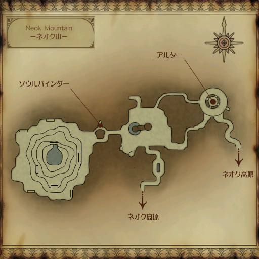

NPC？？？
名前が「？？？」と表示されるキャラクター。話しかけるセリフもドロップも持たないので、ほかの一覧には出てこない。
ミーリム海岸：貴族の隠し金庫
場所：ミーリム海岸。悪しき贅沢と正義の盗み の途中（金庫を盗む段階）で、貴族の隠し金庫 をまだ持っていないときだけ、この場所の 5 m 以内に近づくと選べる（それ以外のときは選べない）。

盗み方：インセーン スティール をかける（ほかのテクニックでは何も起きない）。成功すると 貴族の隠し金庫 ×1 をもらってクエストが進む。失敗すると「盗みに失敗した…」と出る（何度でもやり直せる）。バッグに空きが 1 枠ないと盗めない。
成功の判定：判定値 = 100 −（80〜100 のランダム）+ 盗みスキル ×（1 − 重量 ÷ 最大重量）（100 が上限）。1〜100 のランダムな値がこの判定値以下なら成功。荷物が重いほど盗みスキルが効かなくなる。
| 盗みスキル | 重量 0 | 重量が最大の半分 | 重量が最大の 9 割 |
|---|---|---|---|
| 0 | 9.1% | 9.1% | 9.1% |
| 20 | 29.3% | 19.2% | 11.1% |
| 40 | 49.5% | 29.3% | 13.1% |
| 60 | 69.7% | 39.4% | 15.2% |
| 80 | 89.9% | 49.5% | 17.2% |
| 100 | 100.0% | 59.6% | 19.2% |
盗んだ金庫は 悪しき贅沢と正義の盗み の依頼主に届ける（報酬はクエストのページ）。
ネオク山：クリックでバフ
場所：ネオク山（4 か所）。クリックすると S・T・R、B・I・G、E・X・P のどれか 1 つ（それぞれ 3 分の 1）がかかる。このどれかがかかっている間は、クリックしても何も起きない。

登場するクエスト（2 件）
| クエスト | 区分 | 登場箇所 | 最初のステップ |
|---|---|---|---|
| 祝え、メーデー！(戦闘) | クエスト | 本文、ステップ 1、ステップ 2、ステップ 4、ステップ 5、ステップ 7、ステップ 8、ステップ 10 | [1] ネオク高原に住み着いたエレクトロシールドから奪える乖離痕を3つ？？？に届けよう |
| 祝え、メーデー！(生産) | クエスト | 本文、ステップ 1、ステップ 2、ステップ 3、ステップ 4、ステップ 5、ステップ 6、ステップ 8 | [1] ミリーム海岸に生えておるウィンダー草から採れるウィンダーを3つ？？？に渡そう |